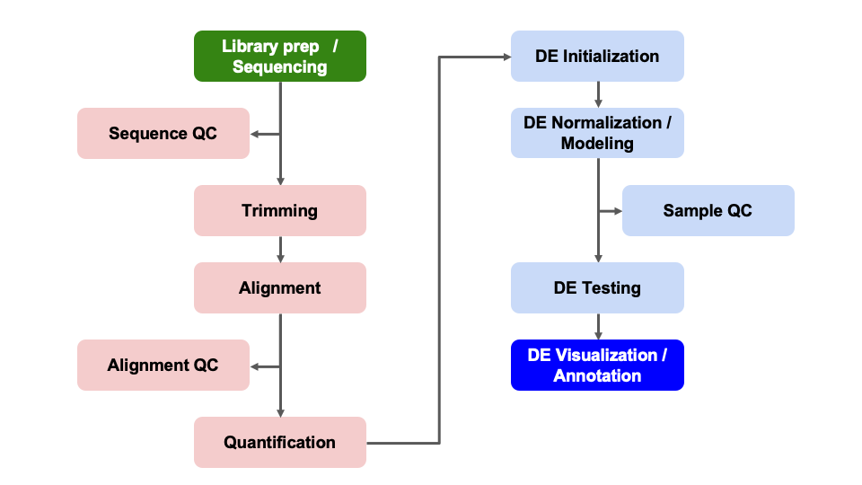
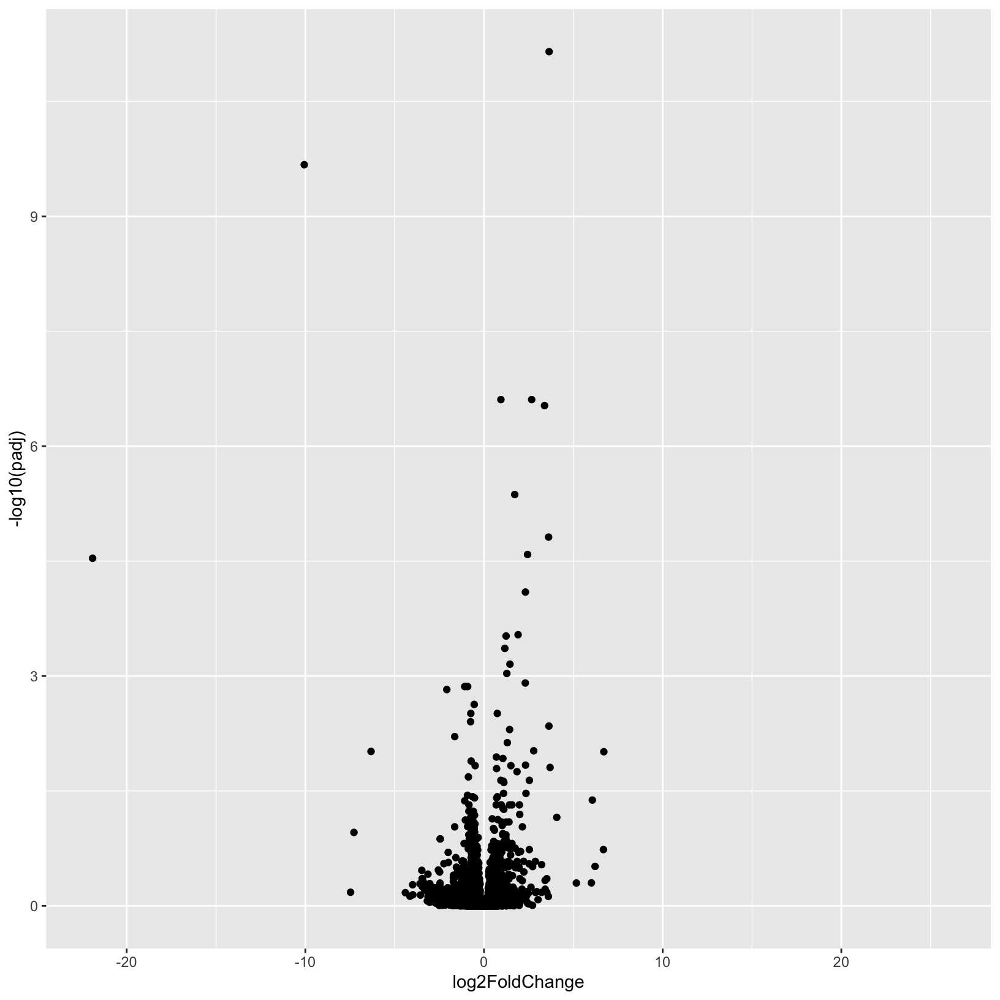
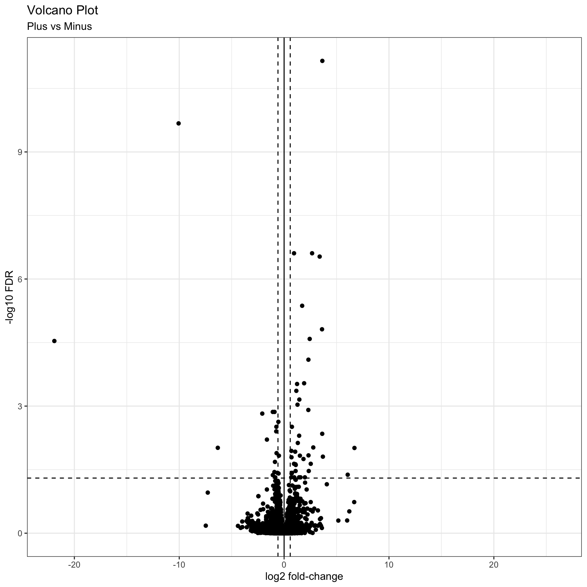
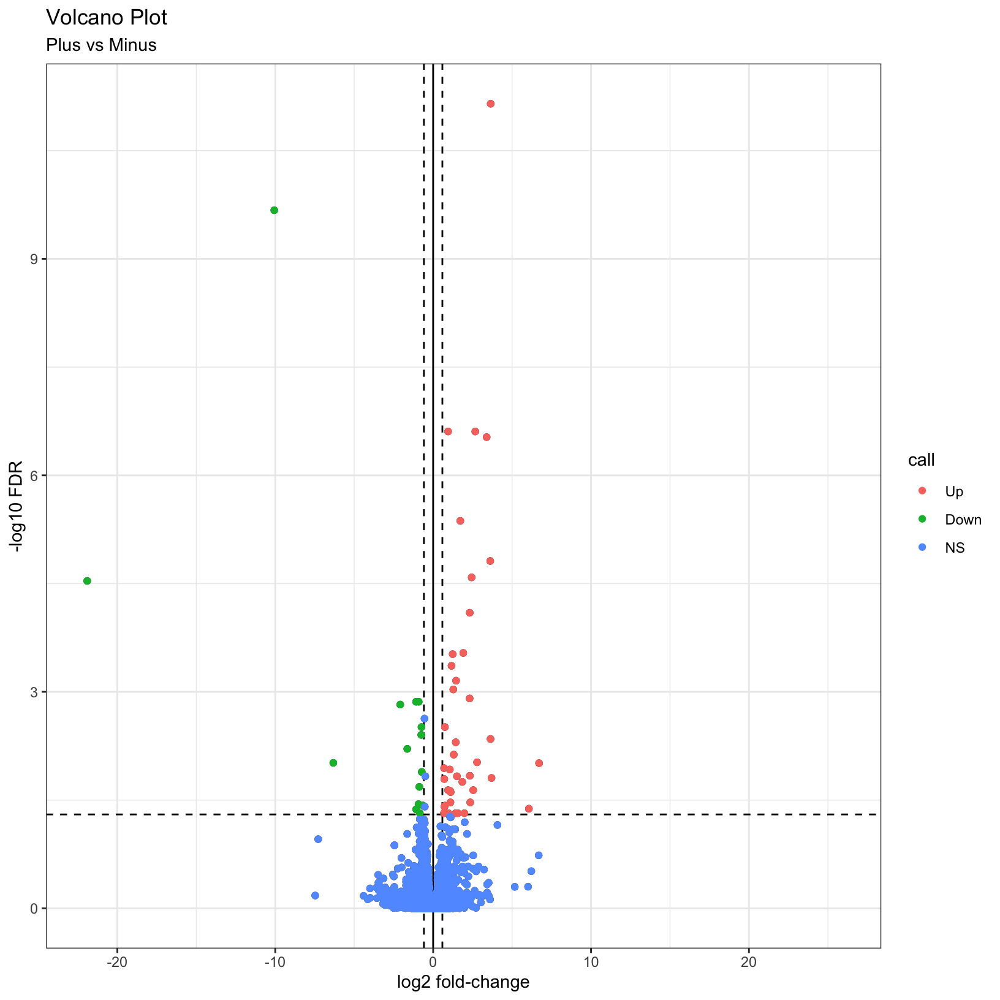

Objectives
- Understand advantages of using gene ids when analyzing data.
- Given a list of ENSEMBL gene ids, add gene symbols and Entrez accessions.
- Generate common visualizations for differential expression comparisons
- Understand choosing thresholds for calling differentially expressed genes
- Discuss options for functional enrichments
Here we will generate summary figures for our results and annotate our DE tables.

Part of differential expression analysis is generating visualizations and summaries to share our results. While the DESeq2 tutorial provides examples of other visualizations, a common visualization to summarize DE comparisons are volcano plots.
To summarize DE genes, we first need thresholds for determining significance. A reasonable threshold for linear fold-change is less than -1.5 or greater than 1.5 (which corresponds to log2 fold-change -0.585 and 0.585, respectively. A standard threshold for the adjusted p-value is less than 0.05.
Let’s set these as variables to reuse. This is generally good practice because if these thresholds change upon later consideration, you only have to change them in one location of your script, which will reduce errors from missing some instances in your code.
fc = 1.5
fdr = 0.05Note: Choosing thresholds
Thresholding on adjusted p-values < 0.05 is a standard threshold, but depending on the research question and/or how the results will be used, other thresholds might be reasonable.
There is a nice Biostar post that discusses choosing adjusted p-value thresholds, including cases where a more relaxed threshold might be appropriate and (some heated) discussion of the dangers of adjusting the choosen threshold after running an analysis. Additionally, there is a Dalmon et al 2012 paper about p-value and fold-change thresholds for microarray data that may help provide some context.
To generate a general summary of the DE results, we can use the
summary function to generate a basic summary by DESeq2.
summary(results_minus_vs_plus)
out of 16249 with nonzero total read count
adjusted p-value < 0.1
LFC > 0 (up) : 53, 0.33%
LFC < 0 (down) : 38, 0.23%
outliers [1] : 72, 0.44%
low counts [2] : 3781, 23%
(mean count < 7)
[1] see 'cooksCutoff' argument of ?results
[2] see 'independentFiltering' argument of ?resultsHowever, this summary is simply a text output that we are unable to manipulate. Moreover, notice that the thresholds are not quite as we would like them.
We can use conditional statements to determine the number of genes that pass our thresholds for each comparison, which we can then use to add information to the results table and plots.
Exercise
How would we identify the number of genes with adjusted p-values < 0.05 and a fold-change above 1.5 (or below -1.5)?
Here is one possible answer:
sum(results_minus_vs_plus$padj < fdr & abs(results_minus_vs_plus$log2FoldChange) >= log2(fc), na.rm = TRUE)[1] 56Let’s now create a new column in results_minus_vs_plus
to record the significance “call” based on these thresholds. And let’s
separate the call by “Up” or “Down”, noting that these are relative to
our “Case” condition of “plus”, or iron replete mice. There are many
ways to accomplish this, but the following will work:
First define all values as “NS” or “not significant”:
results_minus_vs_plus$call = 'NS'
head(results_minus_vs_plus)log2 fold change (MLE): condition minus vs plus
Wald test p-value: condition minus vs plus
DataFrame with 6 rows and 7 columns
baseMean log2FoldChange lfcSE stat pvalue
<numeric> <numeric> <numeric> <numeric> <numeric>
ENSMUSG00000000001 1489.83039 0.297760 0.210310 1.415815 0.156830
ENSMUSG00000000028 1748.93544 0.226421 0.176795 1.280695 0.200301
ENSMUSG00000000031 2151.87715 0.457635 0.764579 0.598545 0.549476
ENSMUSG00000000037 24.91672 0.579130 0.561259 1.031840 0.302147
ENSMUSG00000000049 7.78377 -0.899483 1.553063 -0.579167 0.562476
ENSMUSG00000000056 19653.54030 -0.174048 0.203529 -0.855151 0.392468
padj call
<numeric> <character>
ENSMUSG00000000001 0.868573 NS
ENSMUSG00000000028 0.902900 NS
ENSMUSG00000000031 0.995391 NS
ENSMUSG00000000037 0.950613 NS
ENSMUSG00000000049 0.998043 NS
ENSMUSG00000000056 0.982479 NSNext, determine the “Up” and “Down” indices:
up_idx = results_minus_vs_plus$padj < fdr & results_minus_vs_plus$log2FoldChange > log2(fc)
down_idx = results_minus_vs_plus$padj < fdr & results_minus_vs_plus$log2FoldChange < -log2(fc)Last, use those indices to assign the correct “Up” or “Down” values to the correct indices, and look at the head of the result:
results_minus_vs_plus$call[up_idx] = 'Up'
results_minus_vs_plus$call[down_idx] = 'Down'
head(results_minus_vs_plus)log2 fold change (MLE): condition minus vs plus
Wald test p-value: condition minus vs plus
DataFrame with 6 rows and 7 columns
baseMean log2FoldChange lfcSE stat pvalue
<numeric> <numeric> <numeric> <numeric> <numeric>
ENSMUSG00000000001 1489.83039 0.297760 0.210310 1.415815 0.156830
ENSMUSG00000000028 1748.93544 0.226421 0.176795 1.280695 0.200301
ENSMUSG00000000031 2151.87715 0.457635 0.764579 0.598545 0.549476
ENSMUSG00000000037 24.91672 0.579130 0.561259 1.031840 0.302147
ENSMUSG00000000049 7.78377 -0.899483 1.553063 -0.579167 0.562476
ENSMUSG00000000056 19653.54030 -0.174048 0.203529 -0.855151 0.392468
padj call
<numeric> <character>
ENSMUSG00000000001 0.868573 NS
ENSMUSG00000000028 0.902900 NS
ENSMUSG00000000031 0.995391 NS
ENSMUSG00000000037 0.950613 NS
ENSMUSG00000000049 0.998043 NS
ENSMUSG00000000056 0.982479 NSFinally, looking ahead to when we plot these values as colors in a
volcano plot, let’s make this call column a factor and
specify the level ordering:
results_minus_vs_plus$call = factor(results_minus_vs_plus$call, levels = c('Up', 'Down', 'NS'))
head(results_minus_vs_plus)log2 fold change (MLE): condition minus vs plus
Wald test p-value: condition minus vs plus
DataFrame with 6 rows and 7 columns
baseMean log2FoldChange lfcSE stat pvalue
<numeric> <numeric> <numeric> <numeric> <numeric>
ENSMUSG00000000001 1489.83039 0.297760 0.210310 1.415815 0.156830
ENSMUSG00000000028 1748.93544 0.226421 0.176795 1.280695 0.200301
ENSMUSG00000000031 2151.87715 0.457635 0.764579 0.598545 0.549476
ENSMUSG00000000037 24.91672 0.579130 0.561259 1.031840 0.302147
ENSMUSG00000000049 7.78377 -0.899483 1.553063 -0.579167 0.562476
ENSMUSG00000000056 19653.54030 -0.174048 0.203529 -0.855151 0.392468
padj call
<numeric> <factor>
ENSMUSG00000000001 0.868573 NS
ENSMUSG00000000028 0.902900 NS
ENSMUSG00000000031 0.995391 NS
ENSMUSG00000000037 0.950613 NS
ENSMUSG00000000049 0.998043 NS
ENSMUSG00000000056 0.982479 NSTip
It is often helpful to include code like this in differential expression analyses so there is a clearly labelled column that makes subsetting and summarizing the results easier.
Now we are in a position to quickly summarize our differential expression results:
table(results_minus_vs_plus$call)
Up Down NS
41 15 16193 We see quickly how many genes were “Up” in iron replete, how many were “Down” in iron replete, and how many were not significant.
Checkpoint: If you successfully added the
call column and got the same table result as above, please
indicate with a green check. Otherwise use a red x.
As described by this Galaxy project tutorial, a volcano plot is a type of scatterplot that shows statistical significance (adjusted p-value) versus magnitude of change (fold change). In a volcano plot, the most upregulated genes are towards the right, the most downregulated genes are towards the left, and the most statistically significant genes are towards the top.
Let’s coerce the DataFrame which was returned by
DESeq2::results() into a tibble in
anticipation of using the ggplot2 library to plot. We’re
also going to modify our results table so that the row names become a
separate column, and so that it’s ordered by adjusted p-value.
# Use the rownames argument to create a new column of gene IDs
# Also arrange by adjusted p-value
results_minus_vs_plus = as_tibble(results_minus_vs_plus, rownames = 'id') %>% arrange(padj)Let’s start with a very simple volcano plot that plots the
log2FoldChange on the x-axis, and -log10(padj)
on the y-axis.
# Initialize the plot, saving as object 'p' and specifying the plot type as 'geom_point'
p = ggplot(results_minus_vs_plus, aes(x = log2FoldChange, y = -log10(padj))) +
geom_point()
pWarning: Removed 3853 rows containing missing values (`geom_point()`).
This is a good start, but, as usual it’s nice to add better labels to
the plot with the labs() function:
# Add plot labels and change the theme
p = ggplot(results_minus_vs_plus, aes(x = log2FoldChange, y = -log10(padj))) +
geom_point() +
theme_bw() +
labs(
title = 'Volcano Plot',
subtitle = 'Plus vs Minus',
x = 'log2 fold-change',
y = '-log10 FDR'
)
pWarning: Removed 3853 rows containing missing values (`geom_point()`).This is a nice improvement. What if we now added some visual guides
to indicate where the significant genes are? We can uset he
geom_vline() and geom_hline() functions to
accomplish this:
# Add threshold lines
p = p +
geom_vline(
xintercept = c(0, -log2(fc), log2(fc)),
linetype = c(1, 2, 2)) +
geom_hline(
yintercept = -log10(fdr),
linetype = 2)
pWarning: Removed 3853 rows containing missing values (`geom_point()`).
Finally, why not color the points by their significance status? We
already created the call column that has the correct
values. In this case we can get away with adding a last
geom_point() and specifying the correct aesthetic:
p = p + geom_point(aes(color = call))
pWarning: Removed 3853 rows containing missing values (`geom_point()`).
Removed 3853 rows containing missing values (`geom_point()`).
For additional visualizations for our DE results, we included some example code in the Bonus Content module and this HBC tutorial includes some nice examples.
You may be interested in identifying only the genes that pass your
significance thresholds. A useful way to do this is to conditionally
subset your results. Again, we already created the call
column, which makes this relatively simple to do.
Note: The tidyverse functions you learned in Software Carpentry could also be alternatively used here.
res_sig = results_minus_vs_plus[results_minus_vs_plus$call != 'NS', ]
head(res_sig)# A tibble: 6 × 8
id baseMean log2FoldChange lfcSE stat pvalue padj call
<chr> <dbl> <dbl> <dbl> <dbl> <dbl> <dbl> <fct>
1 ENSMUSG00000032715 1178. 3.64 0.450 8.10 5.71e-16 7.08e-12 Up
2 ENSMUSG00000101645 77.3 -10.1 1.33 -7.58 3.42e-14 2.12e-10 Down
3 ENSMUSG00000027313 243. 2.67 0.410 6.50 7.96e-11 2.47e- 7 Up
4 ENSMUSG00000027889 3250. 0.946 0.145 6.52 7.00e-11 2.47e- 7 Up
5 ENSMUSG00000054136 92.6 3.39 0.526 6.44 1.19e-10 2.95e- 7 Up
6 ENSMUSG00000020142 625. 1.72 0.287 5.99 2.07e- 9 4.28e- 6 Up dim(res_sig)[1] 56 8Since, gene symbols can change over time or be ambiguous we use, and recommend, using the EMSEMBL reference genome and ENSEMBL IDs for alignments and we’ve been working with tables and data where all genes are labeled only by their long ENSEMBL ID (you will notice this in the GTF we used in the reference). However, this can make it difficult to quickly look at results for genes of interest.
Luckily, Bioconductor provides many tools and resources to facilitate access to genomic annotation resources.
To start, we will first load the biomaRt library and choose what reference we want to access. For a more detailed walk through of using biomaRt, this training module might be useful, including what to do when annotations are not 1:1 mappings.
We’ll start by loading the biomaRt library and calling
the useEnsembl() function to select the database we’ll use
to extract the information we need. This will download the mapping of
ENSEMBL IDs to gene symbols, enabling us to eventually add the gene
symbol column we want.
library('biomaRt')
ensembl = useEnsembl(dataset = 'mmusculus_gene_ensembl', biomart='ensembl')Note that this process takes some time and will take up a larger amount of working memory so proceed with caution if you try to run these commands on a laptop with less than 4G of memory
To identify possible filters to restrict our data,
we can use the listFilters function. To identify the
attributes we want to retrive, we can use the
listAttributes function. The best approach is to use list
or search functions to help narrow down the available options.
head(listFilters(mart = ensembl), n = 20)
head(listAttributes(ensembl), n = 30)We can access additional genomic annotations using the bioMart
package. To identify we’ll structure our ‘query’ or search of the
bioMart resources to use the ENSEMBL
id from our alignment to add the gene symbols and gene description
for each gene.
id_mapping = getBM(attributes=c('ensembl_gene_id', 'external_gene_name'),
filters = 'ensembl_gene_id',
values = row.names(assay(dds)),
mart = ensembl)
# will take some time to run
# Preview the result
head(id_mapping) ensembl_gene_id external_gene_name
1 ENSMUSG00000000001 Gnai3
2 ENSMUSG00000000028 Cdc45
3 ENSMUSG00000000031 H19
4 ENSMUSG00000000037 Scml2
5 ENSMUSG00000000049 Apoh
6 ENSMUSG00000000056 NarfNow that we have the ENSEMBL information and a gene symbol to match to our results, we can proceed in the smaller groups. As with the previous exercise, we have broken it into small steps with hints as needed.
Note: For additional information regarding bioMart, please consult the ENSEMBL bioMart vignette or the broader Bioconductor Annotation Resources vignette.
Look at the two data frames that are going to be needed:
id_mapping and results_minus_vs_plus.
head(id_mapping) ensembl_gene_id external_gene_name
1 ENSMUSG00000000001 Gnai3
2 ENSMUSG00000000028 Cdc45
3 ENSMUSG00000000031 H19
4 ENSMUSG00000000037 Scml2
5 ENSMUSG00000000049 Apoh
6 ENSMUSG00000000056 Narfhead(results_minus_vs_plus)# A tibble: 6 × 8
id baseMean log2FoldChange lfcSE stat pvalue padj call
<chr> <dbl> <dbl> <dbl> <dbl> <dbl> <dbl> <fct>
1 ENSMUSG00000032715 1178. 3.64 0.450 8.10 5.71e-16 7.08e-12 Up
2 ENSMUSG00000101645 77.3 -10.1 1.33 -7.58 3.42e-14 2.12e-10 Down
3 ENSMUSG00000027313 243. 2.67 0.410 6.50 7.96e-11 2.47e- 7 Up
4 ENSMUSG00000027889 3250. 0.946 0.145 6.52 7.00e-11 2.47e- 7 Up
5 ENSMUSG00000054136 92.6 3.39 0.526 6.44 1.19e-10 2.95e- 7 Up
6 ENSMUSG00000020142 625. 1.72 0.287 5.99 2.07e- 9 4.28e- 6 Up We want to match the id column of
results_minus_vs_plus to the ensembl_gene_id
column of id_mapping, and once that match is found, we want
to extract the external_gene_name column of
id_mapping to get the gene symbol. Next, look at the
documentation for dplyr::left_join() and merge the
id_mapping table into the
results_minus_vs_plus table on the columns
ensembl_gene_id and external_gene_name.
results_minus_vs_plus_annotated = results_minus_vs_plus %>%
left_join(id_mapping, by = c('id' = 'ensembl_gene_id'))
head(results_minus_vs_plus_annotated)# A tibble: 6 × 9
id baseM…¹ log2F…² lfcSE stat pvalue padj call exter…³
<chr> <dbl> <dbl> <dbl> <dbl> <dbl> <dbl> <fct> <chr>
1 ENSMUSG00000032715 1178. 3.64 0.450 8.10 5.71e-16 7.08e-12 Up Trib3
2 ENSMUSG00000101645 77.3 -10.1 1.33 -7.58 3.42e-14 2.12e-10 Down Gm28635
3 ENSMUSG00000027313 243. 2.67 0.410 6.50 7.96e-11 2.47e- 7 Up Chac1
4 ENSMUSG00000027889 3250. 0.946 0.145 6.52 7.00e-11 2.47e- 7 Up Ampd2
5 ENSMUSG00000054136 92.6 3.39 0.526 6.44 1.19e-10 2.95e- 7 Up Adm2
6 ENSMUSG00000020142 625. 1.72 0.287 5.99 2.07e- 9 4.28e- 6 Up Slc1a4
# … with abbreviated variable names ¹baseMean, ²log2FoldChange,
# ³external_gene_nameWe can use some of the tidyverse functions we’ve
encountered previously to rename the external_gene_name
column to symbol and to move it into the second column
position? Hint: Because of the order of the packages we may have loaded,
we’ll use dplyr::rename() and dplyr::select()
instead of just the select() function. We can discuss this
in a moment.
results_minus_vs_plus_annotated = results_minus_vs_plus_annotated %>%
dplyr::rename('symbol' = 'external_gene_name') %>%
dplyr::select(id, symbol, everything())
results_minus_vs_plus_annotated# A tibble: 16,249 × 9
id symbol baseM…¹ log2F…² lfcSE stat pvalue padj call
<chr> <chr> <dbl> <dbl> <dbl> <dbl> <dbl> <dbl> <fct>
1 ENSMUSG00000032715 Trib3 1178. 3.64 0.450 8.10 5.71e-16 7.08e-12 Up
2 ENSMUSG00000101645 Gm286… 77.3 -10.1 1.33 -7.58 3.42e-14 2.12e-10 Down
3 ENSMUSG00000027313 Chac1 243. 2.67 0.410 6.50 7.96e-11 2.47e- 7 Up
4 ENSMUSG00000027889 Ampd2 3250. 0.946 0.145 6.52 7.00e-11 2.47e- 7 Up
5 ENSMUSG00000054136 Adm2 92.6 3.39 0.526 6.44 1.19e-10 2.95e- 7 Up
6 ENSMUSG00000020142 Slc1a4 625. 1.72 0.287 5.99 2.07e- 9 4.28e- 6 Up
7 ENSMUSG00000040280 Ndufa… 85.9 3.62 0.628 5.75 8.68e- 9 1.54e- 5 Up
8 ENSMUSG00000023951 Vegfa 350. 2.44 0.432 5.64 1.67e- 8 2.59e- 5 Up
9 ENSMUSG00000115420 Rmrp 16.0 -21.9 3.91 -5.60 2.11e- 8 2.90e- 5 Down
10 ENSMUSG00000027737 Slc7a… 119. 2.32 0.429 5.41 6.47e- 8 8.02e- 5 Up
# … with 16,239 more rows, and abbreviated variable names ¹baseMean,
# ²log2FoldChangeAnd now we have our differential expression results annotated with gene symbols, which can help in the interpretation of the results, and can be used in downstream analysis such as functional analysis.
A key aspect of our analysis is preserving the relevant datasets for both our records and for downstream applications, such as functional enrichments.
Next we’ll write out our DE results, now that we’ve added information to the table to help us interpret the results, and share with collaborators.
write.csv(results_minus_vs_plus,
row.names = FALSE,
na = ".",
file="outputs/tables/DE_results_minus_vs_plus.csv")The most relevant count tables are the raw, filtered count table that we used as the input for our analysis and the rlog normalized count table that we used for our quality control visualizations.
To output the raw counts, we will need to use the counts
function to access the count table from within its larger
DESeqDataSet object.
write.csv(counts(dds, normalized = FALSE), file="outputs/tables/DESeq2_raw_counts.csv")Then we’ll output the rlog count table, using the assay
function to access the normalized count table from within its larger
DESeqDataSet object.
write.csv(assay(rld), file="outputs/tables/DESeq2_rlog_normalized_counts.csv")In this section, we:
Overall, we’ve run through most of the building blocks needed to run a differential expression analysis and hopefully built up a better understanding of how differential expression comparisons work, particularly how experimental design can impact our results.
What to consider moving forward:
Let’s pause here for general questions
A way to determine possible broader biological interpretations from the observed DE results, is functional enrichments. There are many options, such as some included in this discussion thread. Other common functional enrichments approaches are gene set enrichment analysis, aka GSEA, Database for Annotation, Visualization and Integrated Discovery, aka DAVID, Ingenity, and [iPathway Guide]
The University of Michigan has license and support for additional tools, such as Cytoscape, so we recommend reaching out to staff with Taubman Library to learn more about resources that might be application toyour research.
sessionInfo()R version 4.2.1 (2022-06-23)
Platform: x86_64-apple-darwin17.0 (64-bit)
Running under: macOS Big Sur ... 10.16
Matrix products: default
BLAS: /Library/Frameworks/R.framework/Versions/4.2/Resources/lib/libRblas.0.dylib
LAPACK: /Library/Frameworks/R.framework/Versions/4.2/Resources/lib/libRlapack.dylib
locale:
[1] en_US.UTF-8/en_US.UTF-8/en_US.UTF-8/C/en_US.UTF-8/en_US.UTF-8
attached base packages:
[1] stats4 stats graphics grDevices utils datasets methods
[8] base
other attached packages:
[1] forcats_0.5.2 stringr_1.4.1
[3] purrr_0.3.5 readr_2.1.3
[5] tibble_3.1.8 tidyverse_1.3.2
[7] biomaRt_2.52.0 data.table_1.14.4
[9] RColorBrewer_1.1-3 pheatmap_1.0.12
[11] ggrepel_0.9.2 dplyr_1.0.10
[13] tidyr_1.2.1 ggplot2_3.4.0
[15] DESeq2_1.36.0 SummarizedExperiment_1.26.1
[17] Biobase_2.56.0 MatrixGenerics_1.8.1
[19] matrixStats_0.62.0 GenomicRanges_1.48.0
[21] GenomeInfoDb_1.32.4 IRanges_2.30.1
[23] S4Vectors_0.34.0 BiocGenerics_0.42.0
[25] knitr_1.40 rmarkdown_2.17
loaded via a namespace (and not attached):
[1] googledrive_2.0.0 colorspace_2.0-3 ellipsis_0.3.2
[4] XVector_0.36.0 fs_1.5.2 farver_2.1.1
[7] bit64_4.0.5 AnnotationDbi_1.58.0 fansi_1.0.3
[10] lubridate_1.9.0 xml2_1.3.3 codetools_0.2-18
[13] splines_4.2.1 cachem_1.0.6 geneplotter_1.74.0
[16] jsonlite_1.8.3 broom_1.0.1 annotate_1.74.0
[19] dbplyr_2.2.1 png_0.1-7 compiler_4.2.1
[22] httr_1.4.4 backports_1.4.1 assertthat_0.2.1
[25] Matrix_1.5-1 fastmap_1.1.0 gargle_1.2.1
[28] cli_3.4.1 htmltools_0.5.3 prettyunits_1.1.1
[31] tools_4.2.1 gtable_0.3.1 glue_1.6.2
[34] GenomeInfoDbData_1.2.8 rappdirs_0.3.3 Rcpp_1.0.9
[37] cellranger_1.1.0 jquerylib_0.1.4 vctrs_0.5.0
[40] Biostrings_2.64.1 xfun_0.34 rvest_1.0.3
[43] timechange_0.1.1 lifecycle_1.0.3 XML_3.99-0.12
[46] googlesheets4_1.0.1 zlibbioc_1.42.0 scales_1.2.1
[49] hms_1.1.2 parallel_4.2.1 yaml_2.3.6
[52] curl_4.3.3 memoise_2.0.1 sass_0.4.2
[55] stringi_1.7.8 RSQLite_2.2.18 highr_0.9
[58] genefilter_1.78.0 filelock_1.0.2 BiocParallel_1.30.4
[61] rlang_1.0.6 pkgconfig_2.0.3 bitops_1.0-7
[64] evaluate_0.18 lattice_0.20-45 labeling_0.4.2
[67] bit_4.0.4 tidyselect_1.2.0 magrittr_2.0.3
[70] R6_2.5.1 generics_0.1.3 DelayedArray_0.22.0
[73] DBI_1.1.3 pillar_1.8.1 haven_2.5.1
[76] withr_2.5.0 survival_3.4-0 KEGGREST_1.36.3
[79] RCurl_1.98-1.9 modelr_0.1.9 crayon_1.5.2
[82] utf8_1.2.2 BiocFileCache_2.4.0 tzdb_0.3.0
[85] progress_1.2.2 readxl_1.4.1 locfit_1.5-9.6
[88] grid_4.2.1 blob_1.2.3 reprex_2.0.2
[91] digest_0.6.30 xtable_1.8-4 munsell_0.5.0
[94] bslib_0.4.1 These materials have been adapted and extended from materials listed above. These are open access materials distributed under the terms of the Creative Commons Attribution license (CC BY 4.0), which permits unrestricted use, distribution, and reproduction in any medium, provided the original author and source are credited.